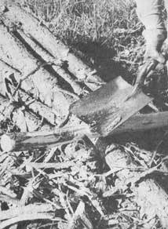
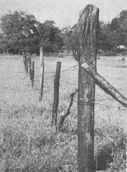
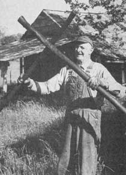
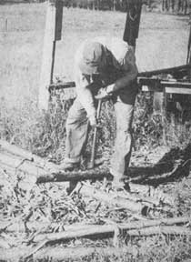

John Bunyan Harrell never heard the word, "ecology", until recently, but he doesn't like to see people waste trees when they're clearing land. "Papa John" has lived in the piney woods of east Texas all his life-through the days of ox driving and country sawmills, cotton raising and farming, into today's cattle ranching-and at 81, he still makes all his own fenceposts just as folks did years ago. Matter of fact, some poles made and treated by John's recipe way back in 1928 are still doing duty as part of his milk cow pen.
There's no secret to making fenceposts as John Bunyan does . . . it's not even hard to do. The method is one of those simple, close-to-nature tasks that most people have turned away from and forgotten about.
In a time when landowners generally bulldoze their property, burn the trees and then buy fenceposts, John still clears his land with a hand axe and carefully saves the long, straight pines for treatment. (Hardwoods don't have to be preserved and can be used for fencing in their natural state.) Later, when he wants to make poles, he picks out green pine logs of a good diameter for the use he has in mind: Regular posts are usually about three or four inches across, corner posts somewhat larger. The length depends on how tall the fence is supposed to be and how much of the upright has to go in the ground.
Next, Papa John prepares the trunks . . . and we were really amazed at how fast and easily the job went. Years of practice have perfected his technique, of course, but John says it's easy enough for anyone who really wants or needs to do it. He claims he can completely skin a pole in two minutes, and we don't think he took that long for most of the ones we watched him peel.
Standing astride the log, John uses a sharpened hoe to smooth off all the knots. Then he strips away the soft bark with a flatheaded shovel (the shavings make great kindling for the fireplace). The finished pole is stacked neatly on a pile, ready for treatment.
John Bunyan's preservative process requires nothing but a vat and several gallons of used motor oil . . . a good way for automobile owners to recycle that waste product rather than pay a garage to dump it into a river. The fortunate few who've learned that they don't really need wheels can still depend on the majority of this country's citizens who do have an automobile for a supply of pole-treating fluid. Just be neighborly and ask.
John's present soaking trough is made from a large, metal oil drum sawed in half lengthwise. In the old days, he built such containers out of wood . . . and he claims that anyone who is capable of constructing a fairly leakproof box can do the same. (The finished wooden tank has to be soaked in water to swell the lumber and seal the cracks.)
Whatever kind of tub is used, it should be put in a shed or under a cover of some kind to keep rain out during the treating process. The prepared poles are placed in the vat, completely covered with oil and left to soak for two months. Then Papa John removes them and sets them on a drip rack to dry.
Fishing the posts out of the tank could be a messy job if it weren't for a device John built just for that purpose. He bolted two poles together near one end so that they could be operated like a pair of giant scissors. Then he hewed the inside of each "blade" on the shorter end to create a spoonlike shape for ease in grasping the oily logs. A few nails driven through the gripping surfaces make the tongs hold even better. This homemade tool is quite effective for pulling the fenceposts out of the oil and onto the rack (which is best located directly beside the vat). John says the poles could be used right after soaking but are cleaner to work with if allowed to dry for a few weeks.
This method of preserving wood seems to be extremely effective. John is still using a treated pole which he knows is over 40 years old because it's one of three that washed down from a neighbor's field in the "flood of '28". Over the years, he's kept track of that particular post by a spike he drove in one end way back then. The other two are probably still around, Papa John says, but he has no way of telling which ones they are. He himself has been using the system 18 years now and still gets good service from the first batch he ever treated.
Commercial plants process posts with various preservatives, heat and pressure, a method which takes less than 36 hours. This year John mixed pentachloropheno-one of the chemicals used in mass production-with oil and soaked some of his posts for a couple of days rather than a couple of months. He's not sure they'll last as long as those made by the old method, but he's willing to give it a try. The "boughten" posts he's had experience with have held up 18 to 20 years before they finally rotted off in the ground. Homemade poles do just as well and often better. And pentachlorophenol and the like don't come cheap, whereas used oil is free. (Remember, too, that some chemical wood preservatives are highly toxic. See page 3 of MOTHER NO. 17.--MOTHER.)
It's refreshing to talk to someone like John Bunyan, for he constantly reminds us that we can survive-and survive comfortably-without becoming dependent on the highly specialized skills of our technological society. For those of us who have more time than money, it's good to know that we can still make what we need the slow, sure, ecologically sound way . . . just as Papa John does.
|
|
 |
 |
|
 |
 |
|